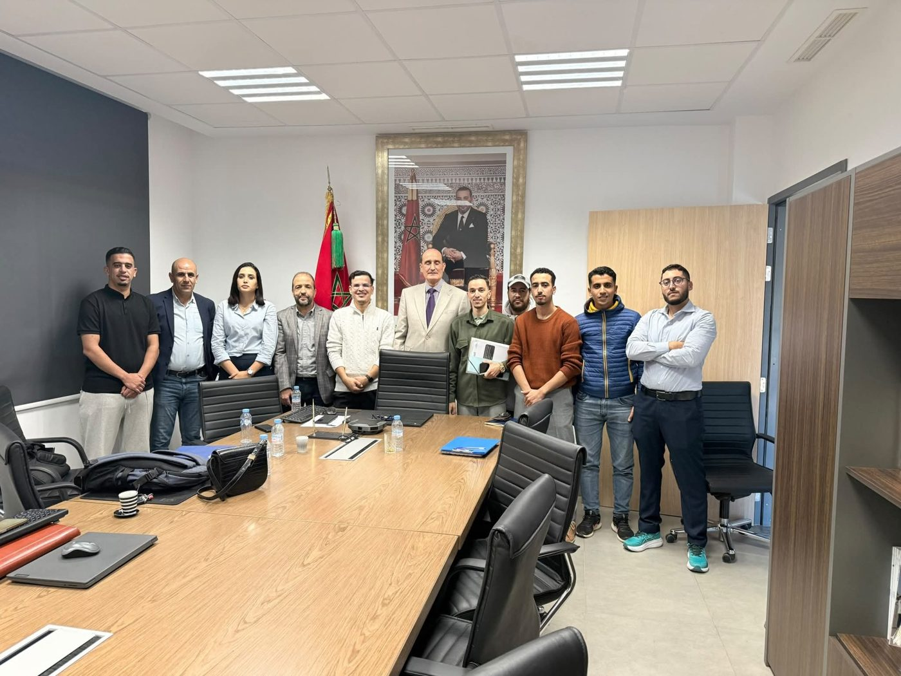

سوس ماسة: لقاء المكتبين الجامعيين للنقابتين المستقلتين مع مدير المجموعة الصحية الترابية في الجلسة الثانية للحوار الاجتماعي

في سياق الجلسة الثانية من جلسات الحوار الاجتماعي، عقد كل من المكتب الجامعي للنقابة المستقلة للأطر الإدارية والتقنية ومساعدي الصحة والمكتب الجامعي للنقابة المستقلة للممرضين وتقنيي الصحة لقاءً مع السيد مدير المجموعة الصحية الترابية سوس ماسة.
وقد شكّل هذا اللقاء مناسبة لنقاش مثمر وحوار غني ومستفيض انصبّ على مختلف القضايا والملفات المطلبية، في أجواء اتسمت بالجدية وتبادل وجهات النظر واستحضار المسؤولية المشتركة في معالجة الإشكالات المطروحة.
وإذ نثمّن هذه الخطوة الإيجابية، فإننا نعتبرها لبنة أساسية في مسار إرساء حوار اجتماعي مؤسساتي جاد ومنتج، قوامه الإنصات المتبادل والاعتراف بمشروعية المطالب والوضوح في المواقف والالتزامات، بما يفتح آفاقاً حقيقية لمعالجة الملفات العالقة وصون كرامة الأطر الإدارية والتقنية والتمريضية ومساعدي الصحة.
إننا نؤمن بأن قيمة الحوار لا تقاس بمجرد انعقاده، وإنما بما يؤسس له من ثقة ووضوح، وما يفضي إليه من التزامات، وما يحققه من أثر ملموس على أرض الواقع. فالحوار المسؤول ليس بديلاً عن المطالبة بالحقوق، بل هو أحد المسارات الجادة لإنصاف أصحابها.
وفي انتظار إصدار بلاغ تفصيلي يستعرض مختلف محاور النقاش والملفات المطروحة ومخرجات هذا اللقاء، نثمّن كل خطوة تفتح أبواب الحوار، ونراهن على أن تتحول إرادة التواصل إلى إرادة فعل، وأن تنتقل الالتزامات من محاضر الاجتماعات إلى واقع الممارسة.
ونواصل المسار 🇲🇦
فتح في تطبيق النقابة